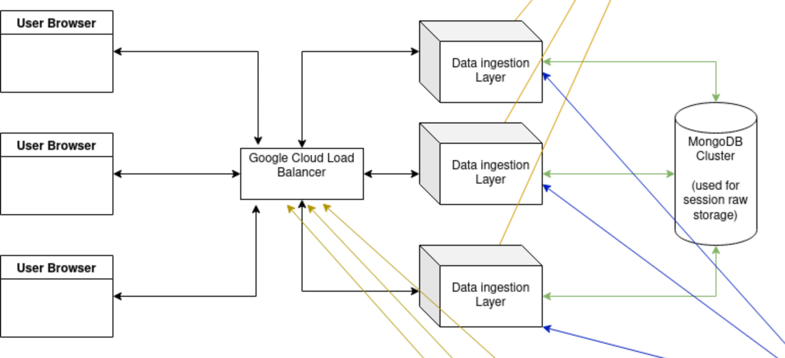

<html>
  <head>
    <link rel="stylesheet" href="https://cdn.jsdelivr.net/npm/reveal.js@4.3.0/dist/reveal.css">
    <link rel="stylesheet" href="https://cdn.jsdelivr.net/npm/reveal.js@4.3.0/dist/theme/white.css">
    <link rel="stylesheet" href="https://cdn.jsdelivr.net/npm/highlight.js@11.5.0/styles/github.css">
    <style>
      :root {
        --r-heading-text-transform: none;
      }

      .reveal blockquote {
	background: #fff;
        border-left: 10px solid #ccc;
        width: 98%;
      }
    </style>
  </head>
  <body>
    <div class="reveal">
      <div class="slides">
        <section data-background-image="opening-slide.png" data-background-size="cover">
        </section>
        <section data-markdown>
            <script type="text/template">
              ## About Me

              * VP Of Enginnering at SessionStack
              * More than 10 years of programming experience
              * Experience with typed and script languages - Python, Ruby, JavaScript, NodeJS, Java, C
              * Interested in the whole stack - from frontend frameworks to infrastructure
              * Loves Mountain Biking &#x1F6B5;

              ---

              ## About SessionStack

              * Digital Experience Insights platform that uncovers opportunities for digital growth
              * Collects various user interactions from the browser
              * Stores more than 10 billions events per month
              * Intensive IO loads are a big part of the project data ingestion layer
              * Uses Python as its main backend language

              ---

              ## Back to basics

              * Event loops

                > event loop is a programming construct or design pattern that waits for and dispatches events or messages in a program
              * Asynchronous I/O

                >  asynchronous I/O (also non-sequential I/O) is a form of input/output processing that permits other processing to continue before the transmission has finished

              ---

              ## AsyncIO Hello world

              * `await` suspends execution until the awaited expression completes
              * `await` can be only used inside `async` functions


              ```python
import asyncio

async def hello_world():
  print('hello')
  await asyncio.sleep(1)
  print('world')

asyncio.run(hello_world())

              ```

              ```txt
hello
world
              ```

              ---

              ## AsyncIO Corountines

              * `async` functions return coroutines
              * coroutines must be awaited or a runtime exception is thrown

              ```python
import asyncio

async def fetch_hello_world():
    await asyncio.sleep(1)
    return 'hello world'

async def hello_world():
    response = await fetch_hello_world()
    print(response)

asyncio.run(hello_world())
              ```

              ```txt
hello world
              ```

              ---

              ## AsyncIO proper order

              ```python
import asyncio

async def delayed_hello_world(sleep_time):
    await asyncio.sleep(sleep_time)
    print(f'hello world {sleep_time}')

async def hello_world():
    await delayed_hello_world(2)
    await delayed_hello_world(1)

asyncio.run(hello_world())
              ```

              ```txt
hello world 2
hello world 1
              ```

              ---

              ## AsyncIO tasks

              * Tasks are created with `asyncio.create_task`
              * Tasks can be awaited, but will not throw runtime exception if they are not awaited

              ---

              ## AsyncIO in proper order not


              ```python
import asyncio

async def delayed_hello_world(sleep_time):
    await asyncio.sleep(sleep_time)
    print(f'hello world {sleep_time}')

async def hello_world():
    task_one = asyncio.create_task(delayed_hello_world(2))
    task_two = asyncio.create_task(delayed_hello_world(1))

    await task_one
    await task_two

asyncio.run(hello_world())
              ```

              ```txt
hello world 1
hello world 2
              ```

              ---

              ## AsyncIO Hunter-gatherer

              ```python
import asyncio

async def delayed_hello_world(sleep_time):
    await asyncio.sleep(sleep_time)
    print(f'hello world {sleep_time}')

async def hello_world():
    await asyncio.gather(
        delayed_hello_world(2),
        delayed_hello_world(1)
    )

asyncio.run(hello_world())
              ```

              ```txt
hello world 1
hello world 2
              ```

              ---

              ## AsyncIO Blocking the Event loop

              ```python
import asyncio, time

async def blocking():
  time.sleep(5)
  await asyncio.sleep(1)
  print(f"blocking finished at {time.strftime('%X')}")

async def non_blocking():
    await asyncio.sleep(5)
    print(f"non blocking finished at {time.strftime('%X')}")

async def main():
    await asyncio.gather(blocking(), non_blocking())

asyncio.run(main())

              ```

              ```txt
blocking finished at 12:12:51
non blocking finished at 12:12:55
              ```

              ---

              ## AsyncIO using thread executors


              ```python
import asyncio
import time

def blocking():
  time.sleep(5)
  print(f"finished at {time.strftime('%X')}")

async def main():
  await asyncio.gather(asyncio.to_thread(blocking), asyncio.to_thread(blocking))

asyncio.run(main())

              ```

              ```txt
finished at 12:05:05
finished at 12:05:05
              ```

              ---

              ## AsyncIO managing event loop explicitly

              Keep in mind that this:


              ```python
asyncio.run(my_coroutine)
              ```

              is a shorthand for that:

              ```python
loop = asyncio.new_event_loop()
asyncio.set_event_loop(loop)
loop.run_until_complete(my_coroutine)
              ```

              ---

              ## Why having multiple event loops might be a good idea

              * There is no practical use case for multiple event loops
              * ThreadPoolExecutors are there to help you with loads that take more time

              ---

              ## Why having multiple event loops might be a bad idea

              * You can implement a web server that can have multiple event loops in order to handle more requests
              * Going with multiprocess solutions is the easier and more robust solution

              ---

              ## Why use it

              > asyncio is used as a foundation for multiple Python asynchronous frameworks that provide high-performance network and web-servers, database connection libraries, distributed task queues, etc.
              >
              > asyncio is often a perfect fit for IO-bound and high-level structured network code.

              ---


              ## FastAPI in the mix

              FastAPI is a modern, fast (high-performance), web framework for building APIs with Python 3.6+ based on standard Python type hints

              ```python
from fastapi import FastAPI


app = FastAPI()


@app.get("/")
async def root():
    return {"message": "Hello World"}
              ```

              ---

              ## FastAPI is Fast

              

              ---

              ## Gotchas

              Always keep in mind that in order for your code to be non-blocking and efficient for async execution, the external libraries you use, should support async APIs themselves

              ```python
...

@app.get("/")
async def root():
    # this operation blocks!
    my_sql_alchemy_user = session.query(User).one()
    return {"user": my_sql_alchemy_user.name }

...
              ```

              ---

              ## It is not a silver bullet

              * You can increase the number of concurrent requests being served from a single machine
              * You cannot reduce the latency most of the time
              * Latency in most CRUD APIs comes from database query and network latencies
              * CPU bound loads are more likely to suffer

              ---

              ## SessionStack's use case

              We have a data ingestion layer that is written in NodeJS and we plan on rewriting it with FastAPI.

              

              ---

              ## Other real live use cases

              * Data ingestion layers (FastAPI, starlette, uvicorn)
              * Typical CRUD REST APIs (FastAPI, starlette, uvicorn)
              * Doing efficient web scraping engines (aiohttp)
              * Message Queue workers (aioamqp, aiokafka)
              * WebSockets (FastAPI)

              ---

              ## Q&A

              ---

              ## Beer And Pizza Time

              

              ---

              ## Resources

              https://docs.python.org/3/library/asyncio.html

              https://fastapi.tiangolo.com/

              https://github.com/timofurrer/awesome-asyncio

            </script>
        </section>
      </div>
    </div>
    <script src="https://cdn.jsdelivr.net/npm/reveal.js@4.3.0/dist/reveal.min.js"></script>
    <script src="https://cdn.jsdelivr.net/npm/reveal.js@4.3.0/plugin/markdown/markdown.js"></script>
    <script src="https://cdn.jsdelivr.net/npm/reveal.js@4.3.0/plugin/highlight/highlight.js"></script>
    <script>
      for (var slide of document.getElementsByTagName('section')){
        if (!(slide.getAttribute('data-background-image') ||
              slide.getAttribute('data-background-color') ||
              slide.getAttribute('data-background-video') ||
              slide.getAttribute('data-background-iframe'))){
          slide.setAttribute('data-background-image', './image1.png')
          slide.setAttribute('data-background-size', 'contain')
          slide.setAttribute('data-background-repeat', 'repeat')
          slide.setAttribute('data-background-color', '#fff')
        }
      }

      Reveal.initialize({
        plugins: [RevealMarkdown, RevealHighlight],
        slideNumber: true,
        width: 1280,
        height: 700,
        center: false
      });
    </script>
  </body>
</html>
